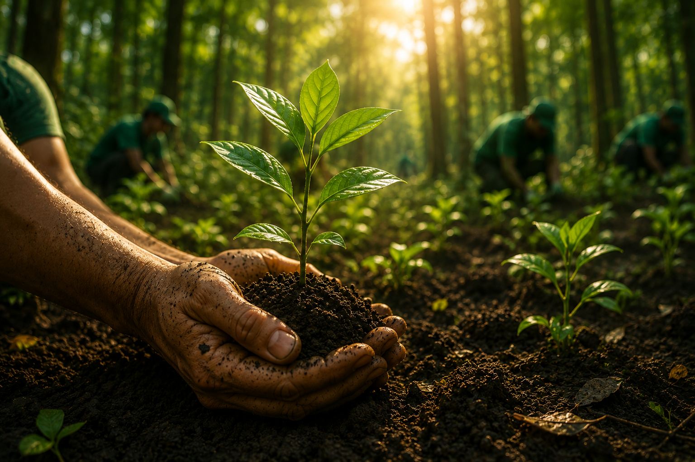
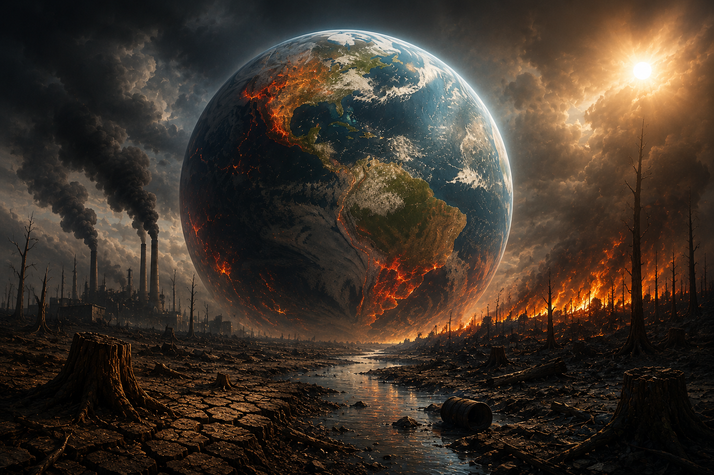

Escolha uma ação sustentável

Reflorestamento

Preservação da Água

Proteção dos Polinizadores


Selecione as ações que você acredita serem importantes para construir um futuro sustentável.
Árvores Recuperadas
Litros de Água Preservados
Espécies Protegidas


Clique em uma ação para transformar o planeta.